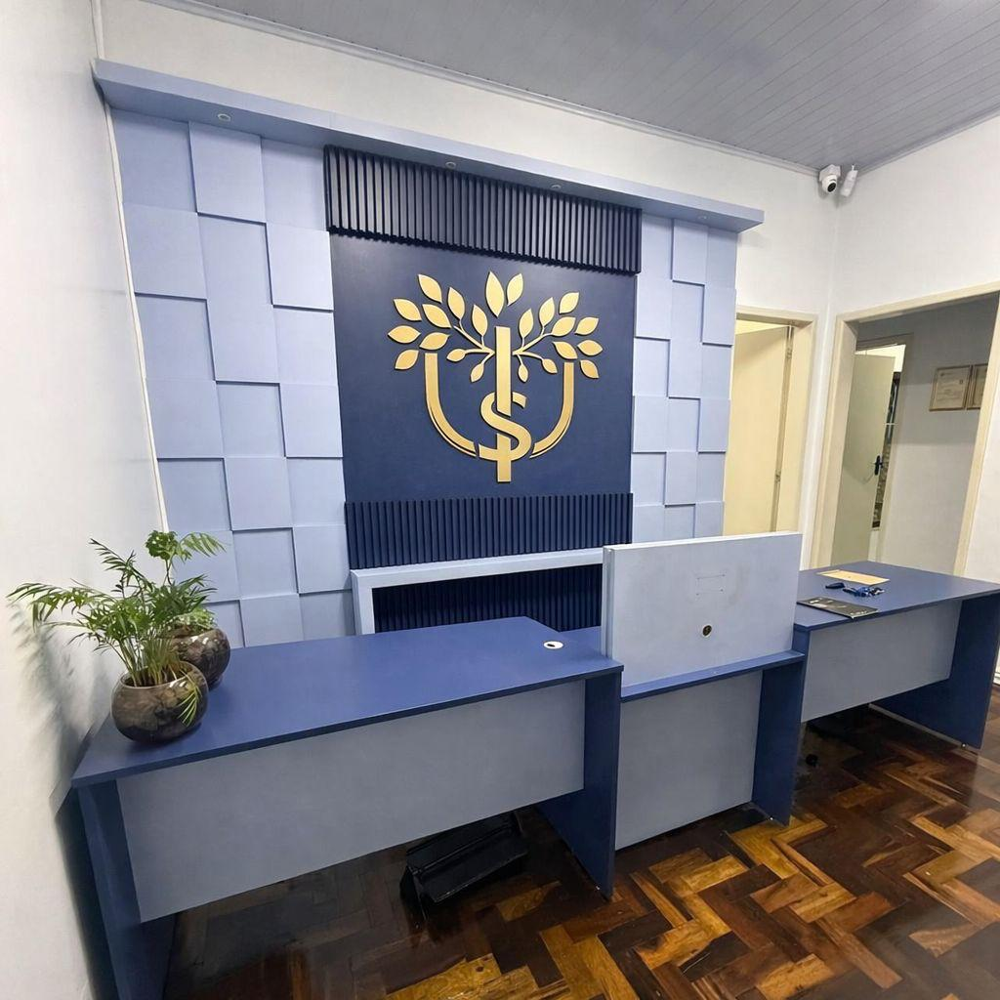
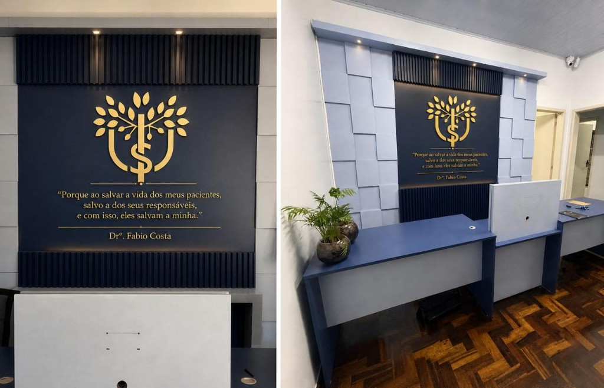
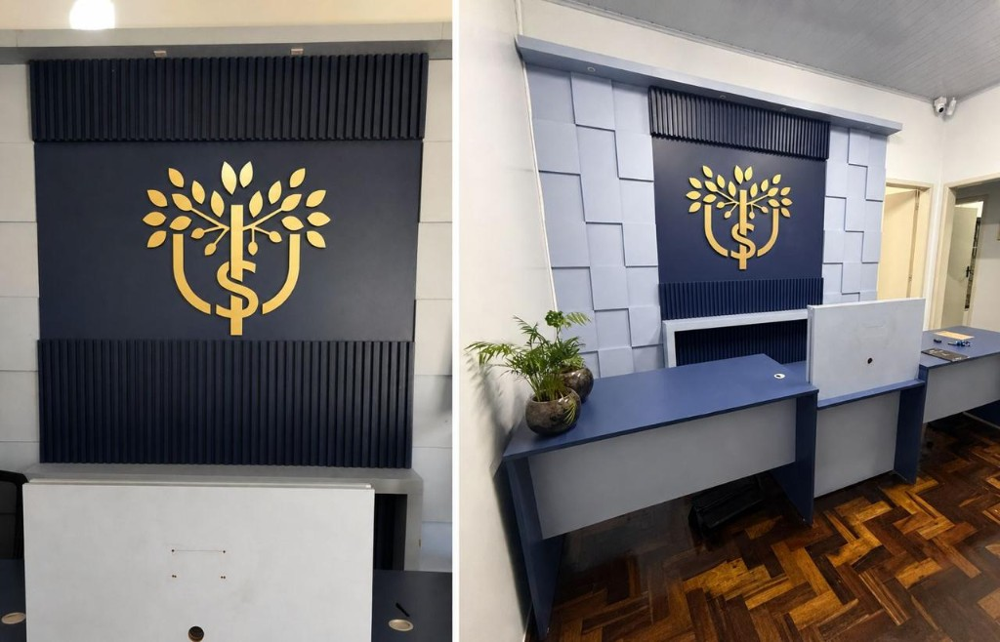

Sapiranga / Rio Grande do Sul
Cuidado que entrega diagnóstico.
A US Vet — Medicina Veterinária Integrativa existe para oferecer atendimento completo e diferenciado a cães e gatos, com precisão, acompanhamento contínuo e confiança com os tutores.
“Porque ao salvar a vida dos meus pacientes, salvo a dos seus responsáveis, e com isso, eles salvam a minha.”
A clínica
Aqui, nós entregamos diagnósticos.
Nosso compromisso é fornecer diagnósticos precisos, tratamentos eficazes e acompanhamento contínuo — sempre priorizando o bem-estar animal e a relação de confiança com os tutores.
Não realizamos apenas consultas ou fazemos exames. A US Vet nasceu para olhar o paciente por inteiro: clínica, especialidades e o cuidado que atravessa a família que chega com ele.
- Diagnóstico preciso
- Tratamento eficaz
- Acompanhamento contínuo

O que fazemos
Atendimento completo, no centro de Sapiranga.
-
Consultas
Avaliação clínica cuidadosa para cães e gatos, com escuta ao tutor e olhar integrativo.
-
Vacinas
Protocolos de imunização alinhados à rotina e à saúde do seu animal.
-
Cirurgias
Procedimentos com estrutura preparada e acompanhamento no pré e no pós-operatório.
-
Exames laboratoriais
Investigação que sustenta o diagnóstico — não é exame por exame, é resposta.
-
Raio-X
Imagem para ver o que o olho clínico precisa confirmar com precisão.
-
Ultrassonografia
Avaliação interna em tempo real, com o cuidado de quem entrega diagnóstico.
-
Emergências
Quando não pode esperar: fale com a clínica pelo WhatsApp (51) 98059-2948 ou pelo fixo (51) 3039-9733.
O espaço
Uma clínica pensada para acolher.
Rua São Pedro, 399 — Centro, Sapiranga.


Agendamento online
Reserve o horário em quatro passos.
A solicitação chega direto no WhatsApp da clínica, já organizada para a equipe. A confirmação do horário é feita por nós — especialmente em emergências.
- Horário de rotina: 08h às 22h
- Emergência: descreva o caso e marque como urgente
- Você também pode ligar: (51) 3039-9733
Contato
Venha até a clínica, ou chame agora.
Endereço
R. São Pedro, 399 — Centro
Sapiranga — RS, 93800-220
Horário
Abre às 08h · Fecha às 22h
Fale conosco
- WhatsApp (51) 98059-2948
- Fixo (51) 3039-9733
- Instagram @us_veterinaria